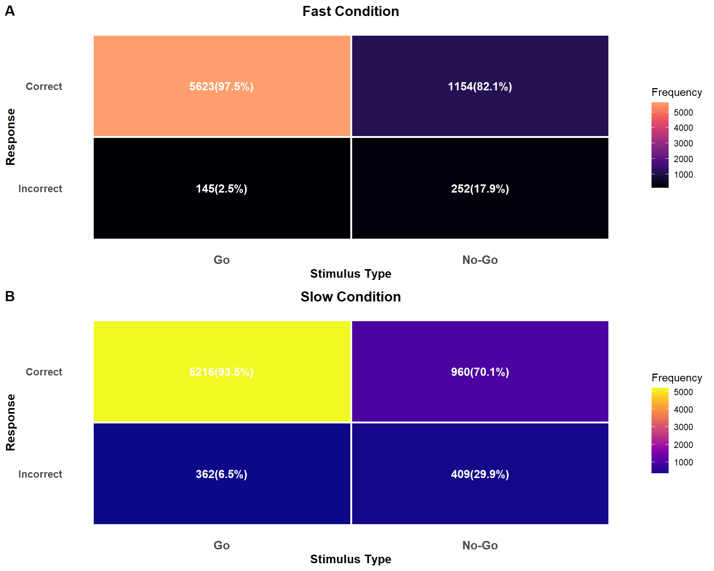

# --- Load and Process Experimental Task Data (Corrected Version) ---## Description:# This script is designed to process .log files containing TWO data tables.# 1. Searches for files for each task (ericsen, Go/No-Go) and condition (slow, fast).# 2. Reads BOTH sections of each file: trial log and summary table.# 3. Stores data in separate data frames for each section and condition.# 4. Adds important metadata such as subject ID, task, and condition.# 5. Saves the resulting 8 data frames as .rds and .csv files.# --- 1. Initial Setup ---# DEFINE MAIN PATHcarpeta_principal <-"G:/My Drive/DCCS/Neurociencia Social/Neurociencia-DCCS/data/data trabajo"# --- 2. Enhanced Reading Function ---# Function that reads BOTH tables from a .log fileread_dual_log_file <-function(filepath) {# Read all lines from file lines <-readLines(filepath, warn =FALSE)# Find headers for both tables header1_index <-which(str_starts(lines, fixed("Subject\tTrial\tEvent Type"))) header2_index <-which(str_starts(lines, fixed("Event Type\tCode\tType")))# Validate that both headers existif (length(header1_index) ==0||length(header2_index) ==0) {warning(paste("Both headers not found in file:", basename(filepath)))return(NULL) }# --- Reading First Table (Trial Log) ---# Skip metadata lines until first header# Read until line before second header rows_to_read_part1 <- header2_index - header1_index -2 df_part1 <-read_tsv( filepath,skip = header1_index -1,n_max = rows_to_read_part1,col_types =cols(.default ="c"), # Read everything as charactershow_col_types =FALSE,lazy =FALSE )# --- Reading Second Table (Summary) --- df_part2 <-read_tsv( filepath,skip = header2_index -1,col_types =cols(.default ="c"), # Read everything as charactershow_col_types =FALSE,lazy =FALSE )# Return a list with both data framesreturn(list(log_data = df_part1, summary_data = df_part2))}# --- 3. Generic Processing Function ---process_task_files <-function(folder_path, task_name, speed) {# Define file search pattern based on task and speed pattern <-case_when( task_name =="ericsen"&& speed =="lento"~"Ericsen_FT_lentp?\\.log$", task_name =="ericsen"&& speed =="rapido"~"Ericsen_FT_rapidp?\\.log$", task_name =="GoNoGo"&& speed =="lento"~"gonogo_FZ2R\\.log$", task_name =="GoNoGo"&& speed =="rapido"~"gonogo_FZR\\.log$",TRUE~"" )# Search for files recursively files <-list.files(folder_path, pattern = pattern, recursive =TRUE, full.names =TRUE)# Use `purrr::map` to process each file and handle errors all_results <- files %>%set_names(basename(dirname(.))) %>%# Name list with subject IDmap(safely(read_dual_log_file))# Separate successful results from errors successful_results <- all_results %>%keep(~is.null(.x$error)) %>%map("result") failed_results <- all_results %>%keep(~!is.null(.x$error))if (length(failed_results) >0) {cat("Files with errors (omitted):", length(failed_results), "\n") }# Combine data frames from first table (log) log_data_combined <-map_df(successful_results, "log_data", .id ="Individual")# Combine data frames from second table (summary) summary_data_combined <-map_df(successful_results, "summary_data", .id ="Individual")# Internal function to clean and convert data types clean_and_convert <-function(df) {if(nrow(df) ==0) return(df)# Convert columns to numeric, ignoring errors df %>%mutate(across(any_of(c("Trial", "Code", "Time", "TTime", "Uncertainty", "Duration", "ReqTime", "ReqDur", "RT")), ~as.numeric(as.character(.)))) }# Return a list with both combined and clean data frameslist(log_data =clean_and_convert(log_data_combined),summary_data =clean_and_convert(summary_data_combined) )}# ============================================# 4. PROCESS ALL FILES# ============================================# Process Flanker taskericsen_lento_data <-process_task_files(carpeta_principal, "ericsen", "lento")ericsen_rapido_data <-process_task_files(carpeta_principal, "ericsen", "rapido")# Process Go/No-Gogonogo_lento_data <-process_task_files(carpeta_principal, "GoNoGo", "lento")gonogo_rapido_data <-process_task_files(carpeta_principal, "GoNoGo", "rapido")# ============================================# 5. SAVE RESULTS# ============================================output_folder <-file.path(carpeta_principal, "resultados_procesados_completos")if (!dir.exists(output_folder)) {dir.create(output_folder)}# Function to save RDS and CSV filessave_data <-function(data_list, task_name, speed, folder) {# Save log datasaveRDS(data_list$log_data, file.path(folder, paste0(task_name, "_", speed, "_log.rds")))write.csv(data_list$log_data, file.path(folder, paste0(task_name, "_", speed, "_log.csv")), row.names =FALSE)# Save summary datasaveRDS(data_list$summary_data, file.path(folder, paste0(task_name, "_", speed, "_summary.rds")))write.csv(data_list$summary_data, file.path(folder, paste0(task_name, "_", speed, "_summary.csv")), row.names =FALSE)}# Save all resultssave_data(ericsen_lento_data, "ericsen", "lento", output_folder)save_data(ericsen_rapido_data, "ericsen", "rapido", output_folder)save_data(gonogo_lento_data, "gonogo", "lento", output_folder)save_data(gonogo_rapido_data, "gonogo", "rapido", output_folder)
1 Flanker task
Code
# Create a unified subject mapping across all tasksall_subjects <-unique(c( ericsen_lento_data[[1]]$Subject, ericsen_rapido_data[[1]]$Subject, gonogo_lento_data[[1]]$Individual, gonogo_rapido_data[[1]]$Individual))# Remove only WW subjects, keep NA as a valid subjectall_subjects <- all_subjects[all_subjects !="WW"]# Ensure NA is treated as a character "NA" not as missingall_subjects[is.na(all_subjects)] <-"NA"# Create global subject mappingglobal_subject_mapping <-data.frame(Subject = all_subjects,Subject_num =seq_along(all_subjects),Subject_label =paste0("S", seq_along(all_subjects)))# Function to create subject-numbered data with global mappingcreate_subject_numbered_data <-function(data, subject_col ="Subject") { data %>%left_join(global_subject_mapping, by =setNames("Subject", subject_col)) %>%mutate(Subject_label =factor(Subject_label, levels = global_subject_mapping$Subject_label))}# Preprocess Flanker dataericsen_lento_data[[1]] <- ericsen_lento_data[[1]] %>%drop_na(Code) %>%filter(Subject !="WW")ericsen_rapido_data[[1]] <- ericsen_rapido_data[[1]] %>%drop_na(Code) %>%filter(Subject !="WW")# Function to map codes to arrow patternsget_arrow_pattern <-function(code) {case_when( code ==11~">>>>>", # Target right, congruent code ==21~"<<<<<", # Target left, congruent code ==20~">><>>", # Target right, incongruent code ==10~"<<><<", # Target left, incongruentTRUE~NA_character_ )}# Process fast condition dataericsen_rapido_data_t <- ericsen_rapido_data[[1]] %>%group_by(Subject) %>%mutate(group_trial =cumsum(if_else(`Event Type`=="Picture", 1, 0)) ) %>%ungroup() %>%group_by(Subject, group_trial) %>%mutate(valid_trial =ifelse(n() ==2, 1, 0),arrow =as.numeric(substr(Code, 1, 1)),correct_answer =as.numeric(arrow[1] == arrow),arrow_pattern =factor(get_arrow_pattern(as.numeric(Code[1])),levels =c(">>>>>", "<<<<<", ">><>>", "<<><<")) ) %>%select( Subject, Trial,`Event Type`, Code, Time, group_trial:correct_answer, arrow_pattern ) %>%ungroup() %>%group_by(Subject, group_trial) %>%mutate(Time =as.numeric(Time),RT_ms = (Time - Time[1]) /10 )# Process fast condition responsesresp_ericsen_rapido <- ericsen_rapido_data_t %>%mutate(action =if_else(arrow ==2, "R", "L"),correct_response =factor(correct_answer, levels =c(0, 1), labels =c("Incorrect", "Correct")) ) %>%filter(`Event Type`!="Picture") %>%ungroup() %>%group_by(Subject, group_trial) %>%filter( RT_ms >=150& RT_ms <=2000 ) %>%slice_min(order_by = Time, n =1)# Process slow condition dataericsen_lento_data_t <- ericsen_lento_data[[1]] %>%group_by(Subject) %>%mutate(group_trial =cumsum(if_else(`Event Type`=="Picture", 1, 0)) ) %>%ungroup() %>%group_by(Subject, group_trial) %>%mutate(valid_trial =ifelse(n() ==2, 1, 0),arrow =as.numeric(substr(Code, 1, 1)),correct_answer =as.numeric(arrow[1] == arrow),arrow_pattern =factor(get_arrow_pattern(as.numeric(Code[1])),levels =c(">>>>>", "<<<<<", ">><>>", "<<><<")) ) %>%select( Subject, Trial,`Event Type`, Code, Time, group_trial:correct_answer, arrow_pattern ) %>%ungroup() %>%group_by(Subject, group_trial) %>%mutate(Time =as.numeric(Time),RT_ms = (Time - Time[1]) /10 )# Process slow condition responsesresp_ericsen_lento <- ericsen_lento_data_t %>%mutate(action =if_else(arrow ==2, "R", "L"),correct_response =factor(correct_answer, levels =c(0, 1), labels =c("Incorrect", "Correct")) ) %>%filter(`Event Type`!="Picture") %>%ungroup() %>%group_by(Subject, group_trial) %>%filter( RT_ms >=150& RT_ms <=4500 ) %>%slice_min(order_by = Time, n =1)# Add subject numbers to Flanker dataresp_ericsen_rapido_num <-create_subject_numbered_data(resp_ericsen_rapido)resp_ericsen_lento_num <-create_subject_numbered_data(resp_ericsen_lento)
Code
create_heatmap <-function(data, condition_name, color_palette) { heatmap_data <- data %>%group_by(arrow_pattern, correct_response) %>%summarise(frequency =n(),.groups ='drop' ) %>%group_by(arrow_pattern) %>%mutate(total =sum(frequency),percentage =round((frequency / total) *100, 1) ) %>%ungroup() %>%mutate(label =paste0(frequency, "\n(", percentage, "%)") ) p <-ggplot(heatmap_data, aes(x = arrow_pattern, y = correct_response, fill = frequency)) +geom_tile(color ="white", size =1) +geom_text(aes(label = label), size =4, color ="white", fontface ="bold") +labs(title =paste(condition_name, "Condition"),x ="Arrow Pattern",y ="Response" ) +theme_minimal() +theme(axis.text.x =element_text(angle =0, hjust =1, size =10, face ="bold"),axis.text.y =element_text(size =10, face ="bold"),axis.title =element_text(size =12, face ="bold"),plot.title =element_text(size =14, face ="bold", hjust =0.5),legend.position ="right",panel.grid =element_blank() )if (condition_name =="Fast") { p +scale_fill_viridis(option ="A", name ="Frequency", begin =0, end =0.8) } else { p +scale_fill_viridis(option ="C", name ="Frequency") }}heatmap_fast <-create_heatmap(resp_ericsen_rapido_num, "Fast", "A")heatmap_slow <-create_heatmap(resp_ericsen_lento_num, "Slow", "C")ggarrange(heatmap_fast, heatmap_slow, ncol =1, nrow =2,labels =c("A", "B"),common.legend =FALSE)
Figure 1. Distribution of correct and incorrect responses in the Flanker task. (A) Fast condition and (B) Slow condition show the frequency and percentage of responses for each arrow pattern (congruent: >>>>> and <<<<<; incongruent: >><>> and <<><<).
Figure 2. Trial-by-trial analysis of the Flanker task. (A-B) Response distribution across trials for each arrow pattern in fast and slow conditions. (C-D) Distribution of arrow patterns across experimental trials. (E-F) Smoothed error rates showing learning curves for each arrow pattern.
Figure 3. Response time distributions in the Flanker task. (A-B) Density plots showing RT distributions for each arrow pattern, separated by response accuracy. (C-D) Violin plots with embedded boxplots showing RT distributions and outliers for each condition.
Figure 4. Individual participant analysis for the Flanker task. (A-B) Mean response times and (C-D) trial counts for each participant across arrow patterns and response types. Heatmaps show individual differences in performance patterns.
Code
# Function to create RT density plot by subject for Flankercreate_flanker_rt_density_by_subject <-function(data, condition_name, response_type, min_rt, max_rt) {# Filter by response type plot_data <- data %>%filter(correct_response == response_type)# Create density plotggplot(plot_data, aes(x = RT_ms, color = arrow_pattern)) +geom_density(alpha =0.3, size =0.8) +facet_wrap(~ Subject_label, ncol =6, scales ="free_y") +scale_color_manual(values =c(">>>>>"="#2E86AB", "<<<<<"="#A23B72", ">><>>"="#F18F01", "<<><<"="#C73E1D"),name ="Arrow Pattern") +labs(title =paste(condition_name, "Condition -", response_type, "Responses"),subtitle ="RT Distribution by Participant and Arrow Pattern",x ="Response Time (ms)",y ="Density" ) +theme_minimal() +theme(axis.text =element_text(size =7),axis.title =element_text(size =10, face ="bold"),plot.title =element_text(size =12, face ="bold", hjust =0.5),plot.subtitle =element_text(size =10, hjust =0.5),strip.text =element_text(size =8, face ="bold"),legend.position ="bottom",legend.title =element_text(size =9, face ="bold"),legend.text =element_text(size =8),panel.grid.minor =element_blank() ) +scale_x_continuous(breaks =seq(floor(min_rt/500)*500, ceiling(max_rt/500)*500, 1000), limits =c(min_rt, max_rt))}# Calculate min and max RT across both conditionsall_rt <-c(resp_ericsen_rapido_num$RT_ms[resp_ericsen_rapido_num$RT_ms >=150], resp_ericsen_lento_num$RT_ms[resp_ericsen_lento_num$RT_ms >=150])min_rt_overall <-min(all_rt, na.rm =TRUE)max_rt_overall <-max(all_rt, na.rm =TRUE)# Create plots for Fast conditionfast_correct <-create_flanker_rt_density_by_subject(resp_ericsen_rapido_num, "Fast", "Correct", min_rt_overall, max_rt_overall)fast_incorrect <-create_flanker_rt_density_by_subject(resp_ericsen_rapido_num, "Fast", "Incorrect", min_rt_overall, max_rt_overall)# Create plots for Slow conditionslow_correct <-create_flanker_rt_density_by_subject(resp_ericsen_lento_num, "Slow", "Correct", min_rt_overall, max_rt_overall)slow_incorrect <-create_flanker_rt_density_by_subject(resp_ericsen_lento_num, "Slow", "Incorrect", min_rt_overall, max_rt_overall)# Display plotsggarrange(fast_correct, fast_incorrect, slow_correct, slow_incorrect,ncol =1, nrow =4,labels =c("A", "B", "C", "D"),common.legend =FALSE,heights =c(1, 1, 1, 1))
Figure 5. Individual participant RT density distributions for the Flanker task. Panels show RT distributions for each participant separated by arrow pattern and response accuracy in (A-B) Fast and (C-D) Slow conditions.
2 Go No-Go
Code
# Process Go/No-Go data - Fast conditiongonogo_rapido_data[[1]] <- gonogo_rapido_data[[1]] %>%drop_na(Code) %>%filter(Individual !="WW")# Process Go/No-Go data - Slow conditiongonogo_lento_data[[1]] <- gonogo_lento_data[[1]] %>%drop_na(Code) %>%filter(Individual !="WW")# Function to get stimulus type labelget_stimulus_type <-function(code) {case_when( code ==22~"Go", code ==33~"No-Go",TRUE~NA_character_ )}# Process Fast condition datagonogo_rapido_data_t <- gonogo_rapido_data[[1]] %>%group_by(Individual) %>%mutate(group_trial =cumsum(if_else(`Event Type`=="Picture", 1, 0)) ) %>%ungroup() %>%group_by(Individual, group_trial) %>%mutate(stimulus_code =as.numeric(Code[`Event Type`=="Picture"][1]),stimulus_type =factor(get_stimulus_type(stimulus_code), levels =c("Go", "No-Go")),response_present =any(`Event Type`=="Response"),correct_answer =case_when( stimulus_type =="Go"& response_present ~1, stimulus_type =="No-Go"&!response_present ~1,TRUE~0 ) ) %>%ungroup() %>%group_by(Individual, group_trial) %>%mutate(Time =as.numeric(Time),RT_ms = (Time - Time[1]) /10 )# Process responses for Fast conditionresp_gonogo_rapido <- gonogo_rapido_data_t %>%filter(`Event Type`=="Response") %>%mutate(correct_response =factor(correct_answer, levels =c(0, 1), labels =c("Incorrect", "Correct")) ) %>%ungroup() %>%group_by(Individual, group_trial) %>%filter( RT_ms >=150& RT_ms <=2000 ) %>%slice_min(order_by = Time, n =1)# Add No-Go trials without responses (correct rejections)nogo_correct_rapido <- gonogo_rapido_data_t %>%filter(`Event Type`=="Picture", stimulus_type =="No-Go", !response_present) %>%distinct(Individual, group_trial, .keep_all =TRUE) %>%mutate(correct_response =factor(1, levels =c(0, 1), labels =c("Incorrect", "Correct")),RT_ms =NA_real_ )# Add Go trials without responses (misses)go_incorrect_rapido <- gonogo_rapido_data_t %>%filter(`Event Type`=="Picture", stimulus_type =="Go", !response_present) %>%distinct(Individual, group_trial, .keep_all =TRUE) %>%mutate(correct_response =factor(0, levels =c(0, 1), labels =c("Incorrect", "Correct")),RT_ms =NA_real_ )# Combine all trials for Fast conditionresp_gonogo_rapido_all <-bind_rows(resp_gonogo_rapido, nogo_correct_rapido, go_incorrect_rapido) %>%arrange(Individual, group_trial)# Process Slow condition datagonogo_lento_data_t <- gonogo_lento_data[[1]] %>%group_by(Individual) %>%mutate(group_trial =cumsum(if_else(`Event Type`=="Picture", 1, 0)) ) %>%ungroup() %>%group_by(Individual, group_trial) %>%mutate(stimulus_code =as.numeric(Code[`Event Type`=="Picture"][1]),stimulus_type =factor(get_stimulus_type(stimulus_code), levels =c("Go", "No-Go")),response_present =any(`Event Type`=="Response"),correct_answer =case_when( stimulus_type =="Go"& response_present ~1, stimulus_type =="No-Go"&!response_present ~1,TRUE~0 ) ) %>%ungroup() %>%group_by(Individual, group_trial) %>%mutate(Time =as.numeric(Time),RT_ms = (Time - Time[1]) /10 )# Process responses for Slow conditionresp_gonogo_lento <- gonogo_lento_data_t %>%filter(`Event Type`=="Response") %>%mutate(correct_response =factor(correct_answer, levels =c(0, 1), labels =c("Incorrect", "Correct")) ) %>%ungroup() %>%group_by(Individual, group_trial) %>%filter( RT_ms >=150& RT_ms <=4500 ) %>%slice_min(order_by = Time, n =1)# Add No-Go trials without responses (correct rejections)nogo_correct_lento <- gonogo_lento_data_t %>%filter(`Event Type`=="Picture", stimulus_type =="No-Go", !response_present) %>%distinct(Individual, group_trial, .keep_all =TRUE) %>%mutate(correct_response =factor(1, levels =c(0, 1), labels =c("Incorrect", "Correct")),RT_ms =NA_real_ )# Add Go trials without responses (misses)go_incorrect_lento <- gonogo_lento_data_t %>%filter(`Event Type`=="Picture", stimulus_type =="Go", !response_present) %>%distinct(Individual, group_trial, .keep_all =TRUE) %>%mutate(correct_response =factor(0, levels =c(0, 1), labels =c("Incorrect", "Correct")),RT_ms =NA_real_ )# Combine all trials for Slow conditionresp_gonogo_lento_all <-bind_rows(resp_gonogo_lento, nogo_correct_lento, go_incorrect_lento) %>%arrange(Individual, group_trial)# Add subject numbers using global mappingresp_gonogo_rapido_num <-create_subject_numbered_data(resp_gonogo_rapido_all, "Individual")resp_gonogo_lento_num <-create_subject_numbered_data(resp_gonogo_lento_all, "Individual")
Code
# Create heatmap function for Go/No-Gocreate_gonogo_heatmap <-function(data, condition_name, color_palette) { heatmap_data <- data %>%group_by(stimulus_type, correct_response) %>%summarise(frequency =n(),.groups ='drop' ) %>%group_by(stimulus_type) %>%mutate(total =sum(frequency),percentage =round((frequency / total) *100, 1) ) %>%ungroup() %>%mutate(label =paste0(frequency, "(", percentage, "%)") ) p <-ggplot(heatmap_data, aes(x = stimulus_type, y = correct_response, fill = frequency)) +geom_tile(color ="white", size =1) +geom_text(aes(label = label), size =4, color ="white", fontface ="bold") +labs(title =paste(condition_name, "Condition"),x ="Stimulus Type",y ="Response" ) +theme_minimal() +theme(axis.text.x =element_text(angle =0, hjust =0.5, size =12, face ="bold"),axis.text.y =element_text(size =10, face ="bold"),axis.title =element_text(size =12, face ="bold"),plot.title =element_text(size =14, face ="bold", hjust =0.5),legend.position ="right",panel.grid =element_blank() )if (condition_name =="Fast") { p +scale_fill_viridis(option ="A", name ="Frequency", begin =0, end =0.8) } else { p +scale_fill_viridis(option ="C", name ="Frequency") }}# Create heatmapsheatmap_fast_gonogo <-create_gonogo_heatmap(resp_gonogo_rapido_num, "Fast", "A")heatmap_slow_gonogo <-create_gonogo_heatmap(resp_gonogo_lento_num, "Slow", "C")ggarrange(heatmap_fast_gonogo, heatmap_slow_gonogo, ncol =1, nrow =2,labels =c("A", "B"),common.legend =FALSE)

Figure 6. Distribution of correct and incorrect responses in the Go/No-Go task. (A) Fast condition and (B) Slow condition show the frequency and percentage of responses for Go and No-Go trials.
Figure 7. Trial-by-trial analysis of the Go/No-Go task. (A-B) Response distribution across trials for Go and No-Go stimuli. (C-D) Distribution of stimulus types across trials. (E-F) Error rates showing performance changes over time.
Figure 8. Response time distributions in the Go/No-Go task. (A-B) Density plots showing RT distributions for Go hits and No-Go false alarms. (C-D) Violin plots with embedded boxplots showing RT distributions for each response type.
Code
# Function to create RT density plot by subject for Go/No-Gocreate_gonogo_rt_density_by_subject <-function(data, condition_name, response_type, min_rt, max_rt) {# Filter by response type plot_data <- data %>%filter(!is.na(RT_ms)) %>%mutate(response_category =case_when( stimulus_type =="Go"& correct_response =="Correct"~"Go Hit", stimulus_type =="No-Go"& correct_response =="Incorrect"~"No-Go False Alarm",TRUE~"Other" ) ) %>%filter(response_category == response_type)if(nrow(plot_data) ==0) {return(ggplot() +annotate("text", x =0.5, y =0.5, label =paste("No", response_type, "data"), size =6) +theme_void() +labs(title =paste(condition_name, "Condition -", response_type)) ) }# Create density plotggplot(plot_data, aes(x = RT_ms, color = response_category, fill = response_category)) +geom_density(alpha =0.3, size =0.8) +facet_wrap(~ Subject_label, ncol =6, scales ="free_y") +scale_color_manual(values =c("Go Hit"="#2E86AB", "No-Go False Alarm"="#E74C3C"),name ="Response Type") +scale_fill_manual(values =c("Go Hit"="#2E86AB", "No-Go False Alarm"="#E74C3C"),name ="Response Type") +labs(title =paste(condition_name, "Condition -", response_type),subtitle ="RT Distribution by Participant",x ="Response Time (ms)",y ="Density" ) +theme_minimal() +theme(axis.text =element_text(size =7),axis.title =element_text(size =10, face ="bold"),plot.title =element_text(size =12, face ="bold", hjust =0.5),plot.subtitle =element_text(size =10, hjust =0.5),strip.text =element_text(size =8, face ="bold"),legend.position ="bottom",legend.title =element_text(size =9, face ="bold"),legend.text =element_text(size =8),panel.grid.minor =element_blank() ) +scale_x_continuous(breaks =seq(floor(min_rt/500)*500, ceiling(max_rt/500)*500, 1000), limits =c(min_rt, max_rt))}# Create plots for Fast conditionfast_go_hits <-create_gonogo_rt_density_by_subject(resp_gonogo_rapido_num, "Fast", "Go Hit", min_rt_gonogo, max_rt_gonogo)fast_false_alarms <-create_gonogo_rt_density_by_subject(resp_gonogo_rapido_num, "Fast", "No-Go False Alarm", min_rt_gonogo, max_rt_gonogo)# Create plots for Slow conditionslow_go_hits <-create_gonogo_rt_density_by_subject(resp_gonogo_lento_num, "Slow", "Go Hit", min_rt_gonogo, max_rt_gonogo)slow_false_alarms <-create_gonogo_rt_density_by_subject(resp_gonogo_lento_num, "Slow", "No-Go False Alarm", min_rt_gonogo, max_rt_gonogo)# Display plotsggarrange(fast_go_hits, fast_false_alarms, slow_go_hits, slow_false_alarms,ncol =1, nrow =4,labels =c("A", "B", "C", "D"),common.legend =FALSE,heights =c(1, 1, 1, 1))
Figure 9. Individual participant RT density distributions for the Go/No-Go task. Panels show RT distributions for each participant separated by response type (Go Hit vs No-Go False Alarm) in (A-B) Fast and (C-D) Slow conditions.
Figure 10. Individual participant analysis for the Go/No-Go task. (A) Signal detection performance plot showing hit rates vs false alarm rates. (B-C) Mean response times and (D-E) trial counts for each participant across stimulus types and response accuracy.